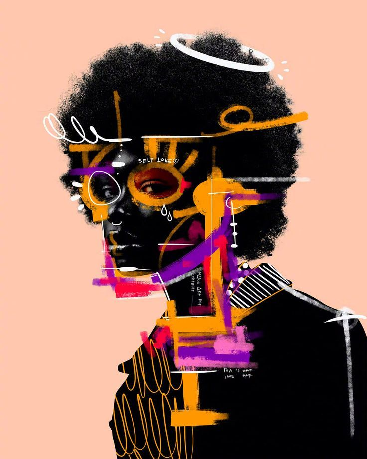

What are you practicing building now?
Choose a module, focus, and time. Generate a practical session you can actually do.
Guitar
Technique
25 min
C major
Current session
25 min Guitar / Technique
Warm hands, map the fretboard, make it musical.
Harmony lens
C major / A minor
C Dm Em F G Am Bdim
Progress
0 / 4 steps
Check steps as you finish them.

Guitar fretboard / hands / tone hands firsttheory later
keep the stain guitar drums harmony composition
Build Session
choose the frameLength
windowFocus
angleRun Session
25 min Guitar / Technique25:00
Ready when you are.
Circle of Fifths
C major / A minor
C
major
major
Relative minor
A minor
Neighbors
F major / G major
Diatonic chords
Practice move
Write a 4-bar phrase using I, vi, IV, V. Then move it clockwise one key.